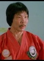

Also known as:Wang Yu, the Destroyer
Country:Hong Kong, 100 minutes
Spoken languages:
Genres:Action
Director(s):
Writer(s):
Video Codec:Unknown
Number: 902


Certification:R
Storyline:
A kung fu school's master is killed by a disgruntled former student and now casino owner (Sit Hon), and the master's children seek out the help of Tiger Wong (Jimmy Wang Yu) to get revenge.
Cast: 
Medium: Original DVD,
Comments: Part of: Martial Arts Masters
Loaned: No
Aspect ratio: Unknown